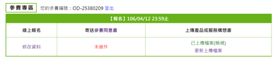

附件三、產品或服務構想書格式範例（PDF上傳繳交）
Open Data創新應用競賽
產品或服務構想書(一般民眾/新創企業)
|
參賽編號 |
OD-25380209 |
|||||||||||
|
產品或服務名稱 |
TravelGO |
|||||||||||
|
市場(使用)族群 |
1. 旅行同好 2. 出去玩卻沒有想法的人 3. 有空閒時間卻不知道要做什麼的人 |
|||||||||||
|
產品或服務簡介 |
想要出遊時卻不知道要去哪裡嗎？查了許多資料卻仍然沒有頭緒嗎？TravelGO 統整幾個政府公認的 Open Data，不論是長時行程還是短時行程，TravelGO 都將為您提供最佳的行程。
長時行程 只要給定[起點]和[終點]，再選擇可以運用的[時間]和[交通方式]，本產品將會自動為您規劃最適合的路徑，若還有閒暇時間，也會推薦您路上可以停留的地方，讓您可以不用特別規劃行程，只要透過系統的推薦，就可以在短時間內幫您安排幾小時內所有行程規劃，是不是很方便呢？
短時行程 只要給我們[時間]和[想做什麼事的類型]，我們就可以幫您規劃接下來的時間可以做些什麼，不管是喝個咖啡，看個展覽，亦或是去公園散個步，我們都可以幫您做出安排，免去您在 Google 上搜尋的時間。 |
|||||||||||
|
資料來源 |
資料集提供機關名稱 |
資料集名稱 |
資料集連結 |
|||||||||
政府資料開放平臺 |
景點 - 觀光資訊資料庫 |
|||||||||||
政府資料開放平臺 |
餐飲 - 觀光資訊資料庫 |
http://data.gov.tw/node/7779 |
||||||||||
政府資料開放平臺 |
活動 - 觀光資訊資料庫 |
http://data.gov.tw/node/7778 |
||||||||||
政府資料開放平臺 |
新北市觀光旅遊景點(中文) |
http://data.gov.tw/node/26647 |
||||||||||
臺北市政府資料開放平台 |
臺北市臺北旅遊網-景點資料(中文) |
http://data.taipei/opendata/datalist/datasetMeta?oid=bd31c976-d3a5-4eed-b8c3-7454bc266afa |
||||||||||
|
壹、緣起與創作目的
貳、市場調查與產品或服務定位
參、使用對象： 1. 旅行同好 2. 出去玩卻沒有想法的人 3. 有空閒時間卻不知道要做什麼的人 4. 任何使用智慧型手機的人 肆、產品或服務特色說明 1. 透過整合與分析政府 API ，並結合 Google Map ，建立行程推薦地圖。 2. 由使用者給定初始位置、時間 ，讓系統來提供適合的行程。 3. 透過方便的 O / X 選擇，幫助使用者輕易的在短時間內訂定最適合的行程。
伍、產品或服務功能 1. 會員系統 2. 行程推薦系統 3. 行程編輯 4. 導航系統 陸、未來規劃 1. 社群功能：給予喜好旅行的旅客們一個交流的平台，分享彼此的照片及心得，因為現有的社群平台中，沒有專為旅行交流的平台，而透過這個平台可以搜尋特定的行程，找尋使用者想去的地點的心得分享。 2. 集點功能：透過抵達旅遊地點，打卡上傳社群分享獲得點數，以點數換取優惠商品。 |
||||||||||||
|
雛型設計圖 |
1. LOGO
2. Flow Chart
Link : http://imgur.com/a/JvZ54
|
|||||||||||
|
文件規格：以A4格式，最多不得超過10頁，並請另存為PDF檔案上傳繳交。 |
||||||||||||


